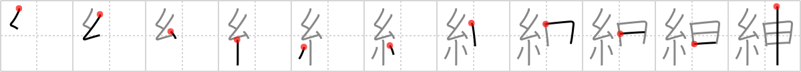

紳
← →
sire

Reading:
On-Yomi: シン
Heisig story:
Thread . . . monkey.
Koohii stories:
1) [akrodha] 14-4-2007(292): Monkeys are very adept at swinging around trees. But when they met Spiderman, who could swing around even better than they could, they all quickly addressed him as sire.
2) [Atomik] 4-2-2010(127): You are now two-thirds of the way through the book! Keep it up!
3) [diracbracket] 23-12-2008(83): Spiderman married a monkey and sired a brood of spider-monkeys.
4) [decamer0n] 29-5-2007(38): When conversing with a sire (noble person) you should always use proper words like "speaketh" and allow them to set the thread of the conversation.
5) [cae99v] 28-1-2008(16): What do you call a monkey that wears the finest threads? Sire of course.